3D Effects
Qt Design Studio provides a set of 3D effects, which are visible in the 2D view. To apply a visual effect to a scene, drag-and-drop an effect from Components > Qt Quick 3D > Qt Quick 3D Effects to a SceneEnvironment component in Navigator.
You can use the Effect component available in Components > Qt Quick 3D > Qt Quick 3D as the base component for creating custom post-processing effects. For more information, see Custom Effects and Materials and Custom Shaders.
Note: In Qt 5, the Effect component is located in Qt Quick 3D Effects > Qt Quick 3D Custom Shader Utilities.
You can apply multiple effects to a scene. Select the Scene Environment component in Navigator to view the applied effects in Properties > Scene Environment > Effect.
If the effects are not displayed in Components, you should add the QtQuick3D.Effects module to your project, as described in Adding and Removing Modules.
See the following table for available effects and example images.
Available Effects
| 3D Effect | Example Image | Description |
|---|---|---|
| Additive Color Gradient | 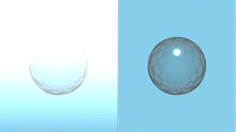 | A gradient with additive color effect that adds a vertical gradient to the whole scene and then additively blends it with all other components in a 3D view. Additive blending adds the pixel values of the gradient and the 3D view, making the result lighter. White areas do not change, and black areas are the same color as the gradient. The Top Color and Bottom Color properties specify the colors used for the gradient at the top and bottom parts of the screen. |
| Blur | 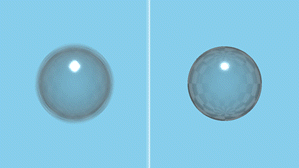 | A simple one-pass blur. The Amount property specifies the strength of the blur. |
| Brush Strokes | 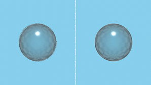 | A brush strokes noise effect that simulates an artistic painting of the image. The Noise Sample Texture property specifies the brush noise texture map as a Texture. The Length property specifies how far to offset the image with the brush. The Size property specifies the scale of the brush. Smaller values result in a finer brush. The Angle property specifies the angle to rotate the brush noise texture. |
| Chromatic Aberration | 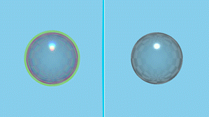 | A chromatic aberration effect. In real life, chromatic aberration is an optical phenomenon causing color fringes in high contrast areas. These color fringes are caused by different colors refracting at different angles splitting white light into a spectrum, which is referred to as dispersion. The Mask Texture property specifies a grayscale texture to control the position and the strength of the effect. The effect is strongest in white areas and weakest in black areas. The Amount property defines the amount of aberration. A negative value inverses the effect. Dispersion scales in relation to the distance from the value of the Focus Depth property. |
| Color Master | 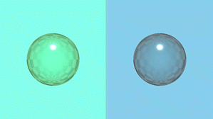 | A color adjustment effect. The Red Strength, Green Strength and Blue Strength properties can be used to adjust each color separately, and the Saturation property to adjust the strength of the overall saturation of the scene. |
| Depth Of Field HQ Blur | 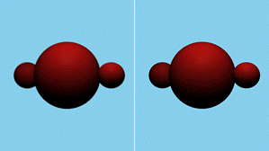 | A depth-based blur effect that performs a gradient blur on regions of the image based on their deviation from a specified distance from the camera. The Blur Amount property defines the strength of blur when out of focus. The Focus Distance property specifies the distance from the camera where the content is in perfect focus. The Focus Range property specifies the distance around the Focus Distance where components are fully in focus. The focus then fades away to fully blurred by the same distance on both the near and far sides. |
| Desaturate | 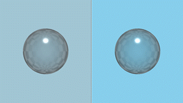 | A desaturating effect that decreases the intensity of all colors in the scene. The Amount property defines the amount of desaturation. |
| Distortion Ripple | 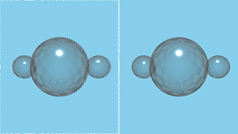 | A distortion effect that adds circular ripples, moving away from the center of the effect. The Radius specifies the spread between ripples. The Width property specifies the width of a ripple, while Height defines the amount of distortion. The Phase property specifies the offset of each wave. Animate this property to see the waves move. The Center property defines the focus point of the distortion. |
| Distortion Sphere | 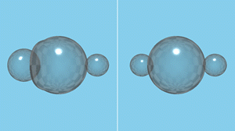 | A distortion effect that creates a 3D effect of wrapping the scene around a spherical shape. The Radius property specifies the area of distortion, while Height defines the amount of distortion. The Center property defines the focus point of the distortion. |
| Distortion Spiral | 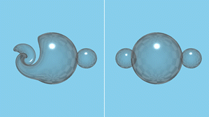 | A distortion effect that creates a spiral-shaped distortion. The Radius property defines the area of distortion, while Strength defines the amount of distortion. The Center property defines the focus point of the distortion. |
| Edge Detect | 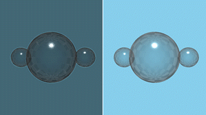 | An edge highlighting effect that turns smooth, unchanging areas of the scene darker, while areas of the scene with sharp color changes are brightened to highlight the edges. The Strength property defines the strength of the edge highlighting. |
| Emboss | 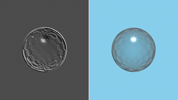 | An emboss effect that replaces each pixel either by a highlight or a shadow, depending on the light/dark boundaries on the scene. Low contrast areas are replaced by a gray background. The embossed result represents the rate of color change at each location. The Amount property defines the strength of the emboss effect. |
| Flip | 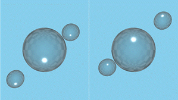 | An effect that flips the whole scene either horizontally, vertically, or in both directions. The Horizontal and Vertical properties define the direction of the flip. |
| Fxaa | 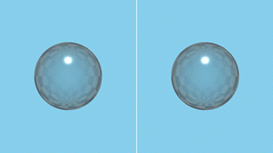 | A fast approximate anti-aliasing effect that removes some of the artifacts from the image without impacting performance as heavily as super-sampling would. The Fxaa effect is an easy fix for many aliasing problems. It also works with moving images. However, it should be noted that this effect can blur and distort fine text details, and as a screen-space heuristic technique, it can sometimes leave sharp edges that ideally would be anti-aliased. |
| Gaussian Blur | 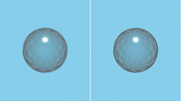 | A two-pass gaussian blur effect that blurs all components in the scene evenly. To keep the effect performant, large blur amount produces a mosaic result instead of smooth blurriness. The Amount property defines the strength of the blur. |
| HDR Bloom Tonemap | 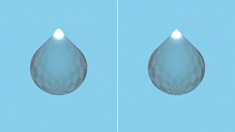 | A bloom with tonemapping effect that adjusts the gamma and exposure of the high-dynamic range rendered content to achieve the image quality you want. Also applies an adjustable bloom effect to very bright areas (like the sun glinting off a car). The Gamma property affects the non-linear curve of the lighting. Higher values increase the exposure of mid tones, brightening the image and decreasing the contrast. The Exposure property functions as a linear multiplier on the lighting, thus brightening or darkening the image overall. The Blur Falloff property adjusts the amount of bloom. Lower values result in stronger bloom effect, and higher values make the effect more subtle. The Tonemapping Lerp property defines the strength of the overall bloom effect. There is usually no need to adjust this. The bloom effect is applied to areas where the lighting is greater than the Bloom Threshold value. A value of The Channel Threshold defines the white point for the image. There is usually no need to adjust this. |
| Motion Blur | 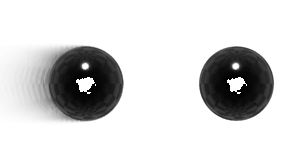 | A motion blur effect that creates an apparent streaking for rapidly moving components in the scene. Note: Only has a visible effect if the background of the scene is set to be transparent in the Background Mode field of the Scene Environment component. Otherwise, the clear color of the background hides the blur. For more information, see Scene Environment. The Fade Amount property defines the fade speed of the trail. The Quality property can be adjusted to specify the quality of the blur. Increasing quality will have impact on performance. |
| Scatter | 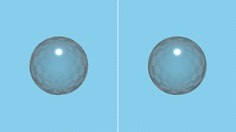 | A noise effect that scatters the pixels in a scene to create a blurry or smeared appearance. Without changing the color of each individual pixel, the effect redistributes the pixels randomly but in the same general area as their original positions. The Noise Sample Texture functions as the scatter noise texture map. The Amount property defines how much to scatter, while Direction sets the direction in which to scatter the pixels. Set to The Randomize property specifies whether scattering changes at each frame or not. |
| S-Curve Tonemap | 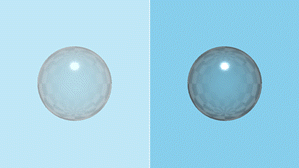 | A tonemapping effect that maps the colors in the scene to others to approximate the appearance of high-dynamic-range result. The Shoulder Slope property defines where highlights lose contrast. The Shoulder Emphasis property defines the amount of emphasis of the shoulder. The Toe Slope property defines where shadows lose contrast. The Toe Emphasis property defines the amount of emphasis of the toe. The Contrast Boost property enhances or reduces the overall contrast of the tonemap. The Saturation Level defines the overall saturation level of the tonemap. The Gamma property defines the gamma value of the tonemap. The Use Exposure property specifies whether the White Point value or the Exposure value will be used for luminance calculations. The White Point property defines the value for the white point. The Exposure property defines the value for exposure. |
| Tilt Shift | 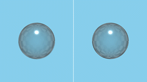 | A tilt shift blur effect that simulates depth of field in a simple and performant manner. Instead of blurring based on the depth buffer, it blurs everything except for a horizontal or vertical stripe on the layer. The Focus Position property specifies the placement of the focus bar in normalized coordinates. The Focus Width property defines a normalized range for Focus Position. Components within this range will be in focus. The Blur Amount property defines the amount of blur. Amounts above 4 may cause artifacts. The Vertical property changes the direction of the effect from horizontal to vertical, while the Inverted property inverts the blur area, causing the center of the component to become blurred. |
| Vignette | 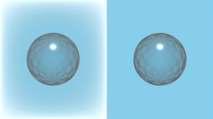 | A vignette effect that reduces brightness towards the periphery of a component. The Strength property defines the strength of vignetting, while Radius specifies its size. The Color property defines the color used for the effect. |